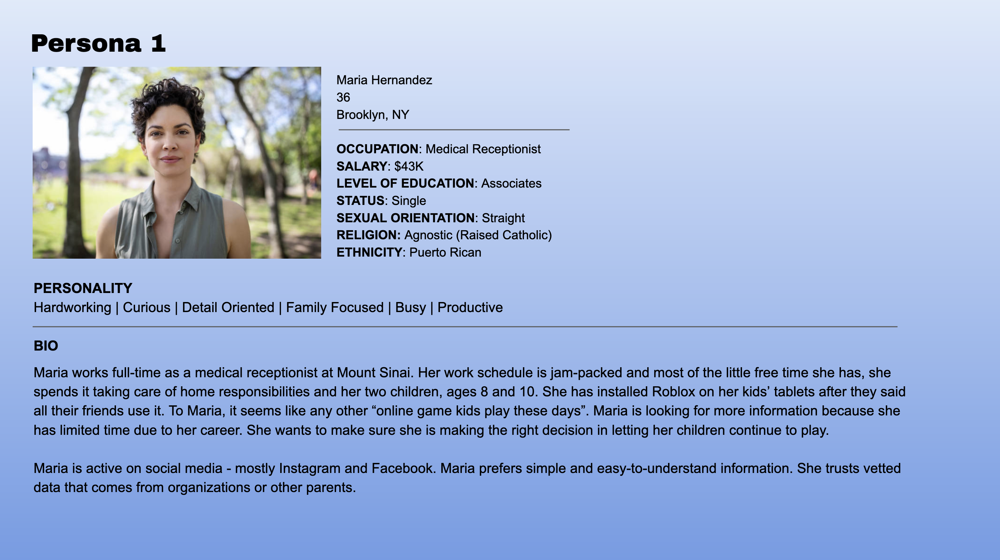
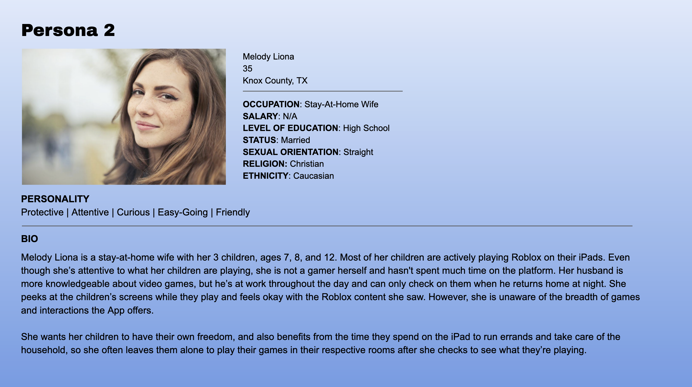
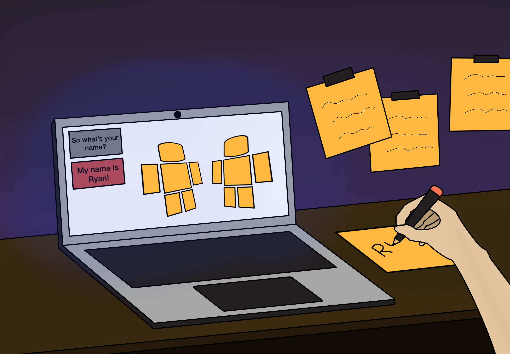
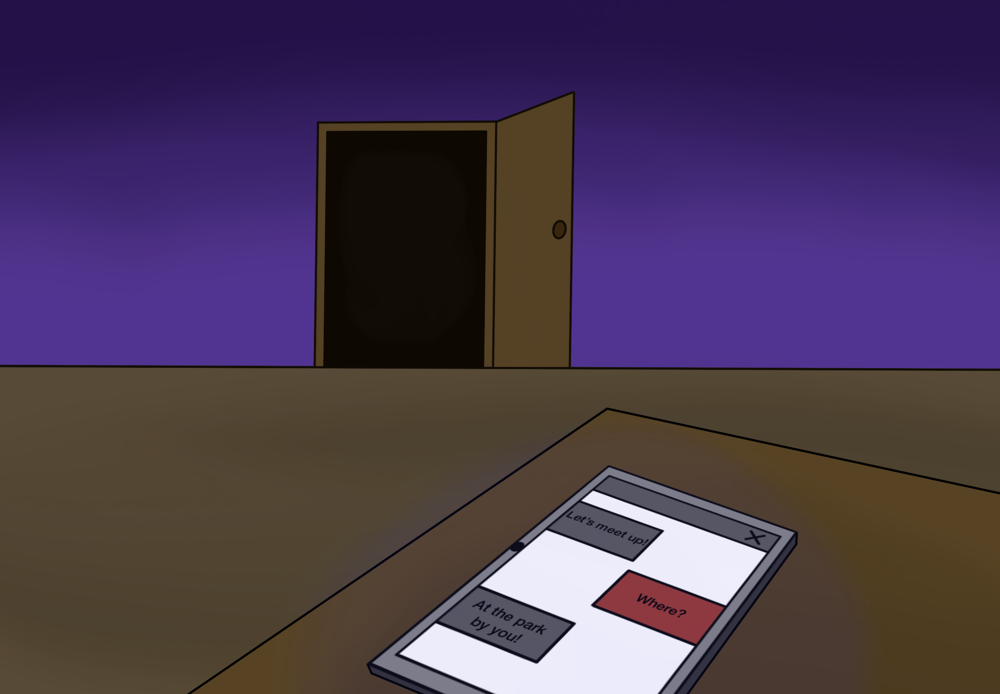
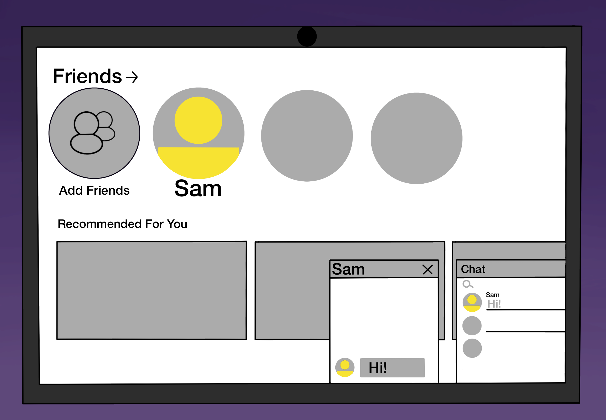
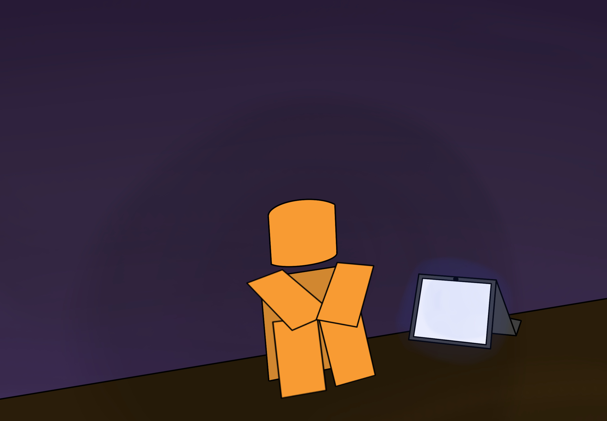

Roblox Awareness
[2026]
Web Design, UI/UX Design
My role: Web Developer/Designer
Roblox Awareness is a multimedia campaign project collaborated between Multimedia Programming & Design students at Borough of Manhattan Community College. Roblox Awareness aims to address Roblox's lack of actions against the grooming and exploitation of children on Roblox, raise awareness of how easily children can be exploited, and educate parents on how they can protect their children on Roblox and in online spaces overall.
The website is specifically designed for our targetted audience, parents and caretakers, using a clear and accessible approach that reflects the seriousness and urgency of online child safety. Its cohesive visual identity, built around bold brand colors and consistent design elements, reinforces the campaign’s trusted and action-oriented message, while maintaining an approachable tone for families seeking guidance and resources regarding Roblox and online platforms overall.
<-- Portfolio
The Process
Ideation
Targetted Audience
❖ Parents/Caretakers
❖ Ages 30-50
❖ Has children ages 5-14
❖ May not be active 'gamers' and view Roblox as harmless
❖ People who have a limited understanding of how user-generated platforms operate
Perception and Tone
Roblox Awareness' message aims to employ a serious and urgent tone, reflecting the gravity of the topic. The objective is to provide trusted, factual, and educational information to parents, guardians, and all responsible adults, prompting them to take meaningful action regarding the dangers associated with Roblox. This information must be treated with the seriousness it demands from those responsible for child safety, delivered with a compassionate perspective.
Style Guide
The website needs to accurately follow the Style Guide decided by the group.
Personas
These are the personas drafted to accurately represent the targetted audience


Initial Drafts
First Draft
While the first draft of the website followed the style guide of the project, I wasn't satisfied with the layout for each page. The layout needed to be improved so that each website page conveys more of the style guide, while still being consistent.
Second Draft
While this draft was more satisfactory with the layout, the draft doesn't accurately depict the perception and tone correctly. I needed to utilize the strong colors of the style guide more efficiently to convey the serious and urgent tone.
Final Draft
The final draft of the website now conveys the correct perception and tone for the campaign project, as well as utilizing the style guide correctly and efficiently.
Safety Tip Illustrations
These set of illustrations were created to give a visual of each safety tip listed on the website's safety tip page.



